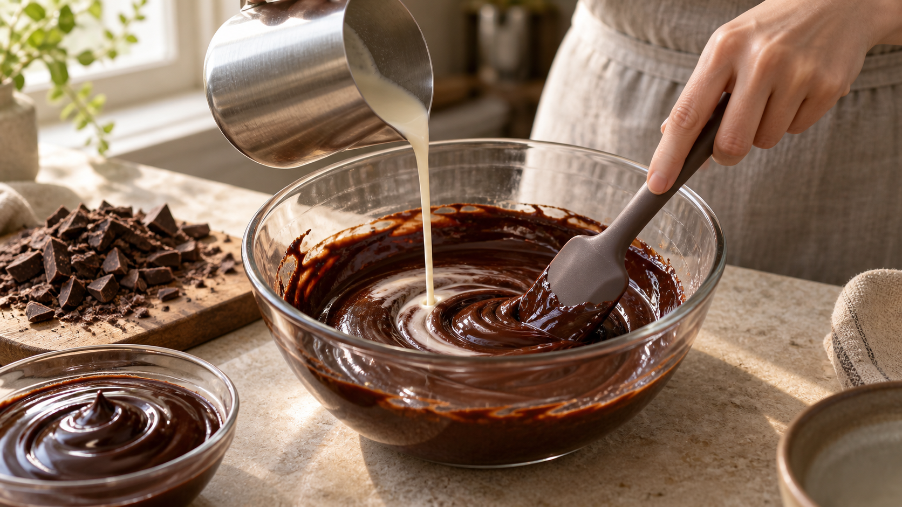

ガナッシュは、40〜45℃でつなぐ。油を浮かせないチョコと生クリームの混ぜ方
チョコレートへ温めた生クリームを注いだ。最初はつややかだったのに、混ぜるほど表面へ油がにじむ。
これは、チョコレートを溶かし損ねただけではない。水分と脂肪が細かく混ざる前に温度が下がり、脂肪の粒どうしが集まり始めた可能性がある。
今日の結論
ガナッシュは、熱ければよいわけでも、冷やしながら混ぜればよいわけでもない。
家庭では、細かく刻んだダークチョコレートへ熱い生クリームを少しずつ加え、全体が40〜45℃ほどあるうちに中心から混ぜ切る。 これを基準にすると、カカオバターが流れる状態を保ったまま、水分の中へ脂肪を細かく散らしやすい。
40〜45℃は、すべてのチョコレートに共通する絶対の正解ではない。カカオ分、生クリームの量、ボウルの冷たさで変わる。それでも、家庭で温度を確かめる出発点として使いやすい範囲だ。
つやは「溶けた証拠」ではなく、つながった証拠
生クリームの中心は水分で、チョコレートの中にはカカオバターという脂肪が多く含まれる。水と油は、そのままでは分かれる。
そこで、脂肪をとても小さな粒にして、水分の中へ散らす。この状態を乳化という。うまくつながると、表面は均一につやが出て、へらから滑らかに落ちる。
ガナッシュの構造を調べた一次研究では、温かいガナッシュは、脂肪の粒が水分側へ散った状態だった。冷えるとカカオバターが結晶になり、脂肪の粒どうしを結ぶ網目へ変わっていく。
つまり、ガナッシュ作りには順番がある。まず温かいうちに小さな脂肪の粒を作り、そのあとで冷やして固さを作る。最初の「つなぐ工程」と、後半の「固める工程」を同時に急ぐと、油浮きが起きやすい。
冷えすぎると、脂肪の結晶が先に動き出す
カカオバターは、温度が下がると一部が結晶になる。この結晶がまだ整っていない脂肪の粒をつなぐと、粒が大きなかたまりへ寄り、表面へ油がにじみやすくなる。
2024年の研究レビューでは、低い温度で混ぜたガナッシュに、結晶化した脂肪による粒の集まりが観察された。一方、別の一次研究では、カカオバターが十分に流れる温度で乳化させたガナッシュは、冷やす前には均一な状態を作っていた。
ここから家庭で導けるのは、「冷たいチョコレートへ生クリームを一気に入れ、ぬるいまま長く混ぜない」ということだ。生クリームの熱を小分けに使い、ボウルの中心へ小さく濃いつやを作ってから、外側へ広げる。
一気に注がないほうが、中心に小さな粒を作りやすい
最初から生クリームを全部加えると、チョコレートの一部だけが溶け、薄い液体の中へ脂肪が浮きやすい。
少量ずつ加えると、最初は重く分離したように見える。それでも中心を小さく混ぜ続けると、急につやのある濃い核ができる。この核へ残りの生クリームをつないでいけばよい。
チョコレートの種類でも仕上がりは変わる。別の一次研究では、脂肪の固まりやすさや、カカオの固形分が、ガナッシュの硬さと広がりやすさを変えていた。だから、同じ温度でも高カカオのチョコレートは重く、ミルクチョコレートは柔らかくなりやすい。温度だけでなく、材料の比率も一緒に見る必要がある。
今日の一皿：温度でつなぐ基本のダークガナッシュ
材料（作りやすい量）
- ダークチョコレート（カカオ分55〜65％）100g
- 生クリーム（乳脂肪35％前後）100g
作り方
- チョコレートを5mmほどに細かく刻み、乾いたボウルへ入れる。生クリームは鍋肌がふつふつする直前まで温める。
- 生クリームの半量を注ぎ、30秒待つ。へらをボウルの中心へ立て、小さな円を描くように混ぜる。中央につやのある濃い部分ができるまで、外側を急いで巻き込まない。
- 残りの生クリームを2回に分けて加える。そのたびに中心から混ぜ、つやを戻してから次を加える。
- 全体がつながった時点で温度を測る。目安は40〜45℃。溶け残りがあり35℃を下回っていたら、ボウルの底をぬるい湯へ数秒ずつ当て、混ぜながら戻す。
- 表面へ密着させてラップをし、用途に合わせて冷ます。ソースなら温かいうちに、塗るなら室温で少し置いてから使う。
泡立て器で大きくかき回すと、空気まで抱き込みやすい。つやを作りたいときは、へらで中心から静かにつなぐ。ハンドブレンダーを使うなら、刃を液面の下へ沈めたまま動かす。
分かれたときは、捨てずに「水分側」を少し戻す
油が浮いたガナッシュは、脂肪が多い場所と水分が多い場所に分かれた状態だ。40℃前後まで穏やかに温め、温かい生クリームを5gずつ足し、中心から混ぜ直すと戻ることがある。
一度に大量に足すと、今度は薄くなりすぎる。少量を加えるたびにつやが戻るかを見る。この直し方は、ガナッシュそのものを比較した家庭実験ではなく、油と水の釣り合いを戻すという研究知見からの応用だ。
この考え方は、マヨネーズやドレッシングにも使える
ガナッシュで覚えたいのは、40〜45℃という数字だけではない。混ざりにくい二つをつなぐときは、片方を少しずつ加え、中心に安定した核を作るという見方だ。
マヨネーズでは卵黄側へ油を少しずつ加える。ドレッシングでは酢へ油を細く入れながら混ぜる。ポタージュへバターやクリームを加えるときも、冷えた脂肪を一度に入れず、温かいスープの一部となじませてから鍋へ戻すと均一になりやすい。
見た目の合図も共通する。細かなつやが出て、へらで引いた跡がすぐ滑らかに戻れば、油と水が細かくつながっている。表面に透明な油の粒が出たら、さらに力任せに混ぜる前に、温度と水分の釣り合いを見直そう。
今日のまとめ
ガナッシュは、チョコレートを溶かしたものではなく、水分の中へ脂肪を細かく散らしたものだ。
冷えすぎると、カカオバターの結晶が先にでき、脂肪の粒が集まりやすくなる。家庭では、細かく刻んだチョコレートへ生クリームを分けて加え、40〜45℃ほどあるうちに中心からつなぐ。
次にガナッシュを作るときは、全部を一気に注がない。中心に小さなつやを作り、それを外側へ育てよう。
参考文献
- Saglio A, Bourgeay C, Socrate R, Canette A, Cuvelier G. Understanding the structure of ganache: Link between composition and texture. International Journal of Gastronomy and Food Science. 2018;13:29-37. https://doi.org/10.1016/j.ijgfs.2018.05.003
- Merachli F, Devienne J, Delmas R, et al. Impact of cocoa fibers on the stability and rheological properties of chocolate ganaches. LWT. 2021;139:110505. https://doi.org/10.1016/j.lwt.2020.110505
- McGill J, Hartel RW. Investigation into the Microstructure, Texture and Rheological Properties of Chocolate Ganache. Journal of Food Science. 2018;83(3):689-699. https://doi.org/10.1111/1750-3841.14053
- Kouřilová V, et al. Chocolate Ganaches: Formulation, Processing and Stability in View of the New Production Trends. Foods. 2024;13(16):2543. https://doi.org/10.3390/foods13162543